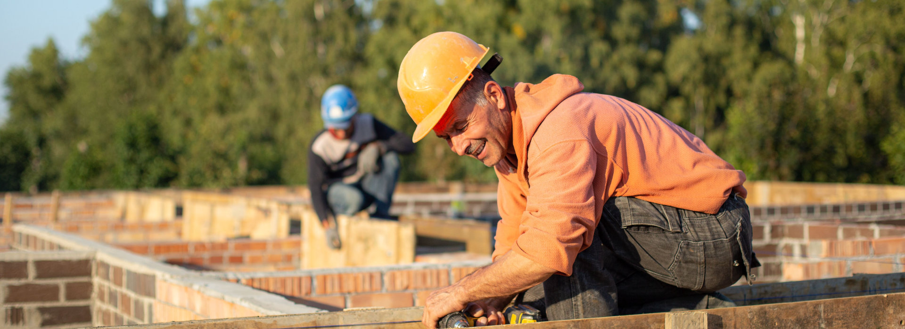

For more than 50 years, Willowstone Landscaping has helped homeowners create outdoor spaces made to be enjoyed.
What began as a small family landscaping business has grown across three generations, but our approach remains much the same: listen carefully, plan thoughtfully, and take pride in work designed to last.
From a simple garden planting to a complete landscape transformation, we believe the best outdoor spaces combine natural beauty, skilled craftsmanship, and an understanding of how people want to live in them.
Willowstone began with a simple belief—that good landscaping should look as though it belongs.
Over the years, our services expanded, new techniques and materials became available, and the landscapes we created became more ambitious. But the principles behind our work remained constant.
Today, that experience guides everything from the placement of a tree to the construction of a stone patio or the design of a backyard pond.
Every property is different. That's why we begin by understanding the landscape that's already there—and what our clients would like it to become.
We consider the architecture of the home, existing trees and plantings, sunlight and shade, terrain, views, and the ways an outdoor space will be used. Rather than treating each feature separately, we look for ways to make plants, stone, water, and open spaces work together as one landscape.
A beautiful landscape should be more than beautiful on the day the project is finished.
We choose plants and materials with the future in mind and approach construction with careful attention to detail. Whether we're building a retaining wall, installing a water feature, or creating new planting beds, our goal is to create work that continues to add beauty and value to a property for years to come.
The best landscapes aren't simply meant to be looked at. They're places for morning coffee on the patio, summer evenings beside the pond, children playing on the lawn, flowers returning each spring, and trees growing alongside the families who planted them.
That's why we don't just design landscapes. We create outdoor spaces meant to become part of home.
Back to Home